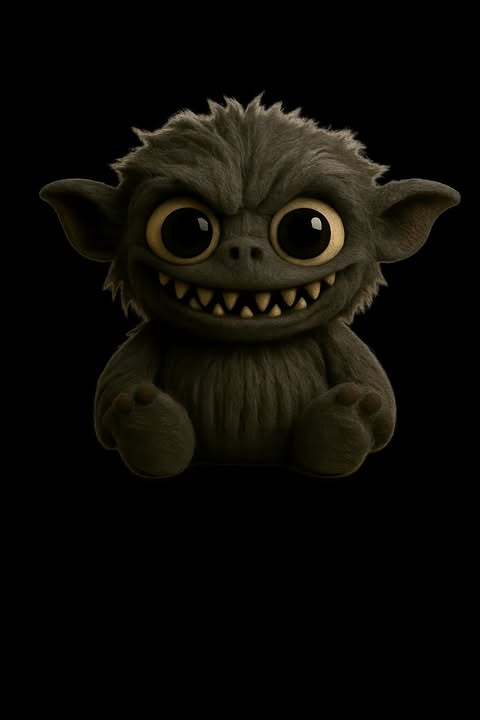

Grimmie
Sitting by the door, Grimmie listens to the hall. When a dark shadow appears, he growls — and the shadow runs like smoke.
When the lights go out, the Nightlings move as quiet as breath. They don’t come to scare you — they guard your dreams and push nightmares into the corner. If you hear a faint crackle or see a candle flicker by itself... that’s their sign.
Sitting by the door, Grimmie listens to the hall. When a dark shadow appears, he growls — and the shadow runs like smoke.
The quietest of all. Nyx erases fear like chalk on a board. If you hear a whisper: “It’s nothing”… that’s Nyx calming the dark.
Always grinning, Reddox sparks little flames in the dark. His laugh scatters nightmares until they vanish like mist.
Warm as a blanket, Brownie sits by your pillow. When your eyes grow heavy, he twitches his nose — and dreams turn soft.